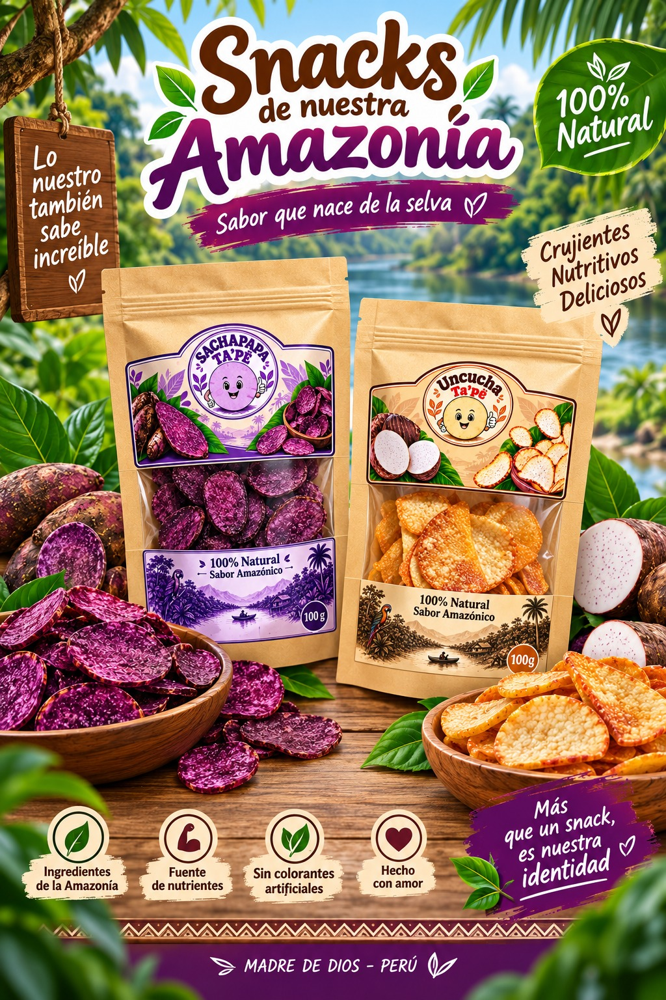
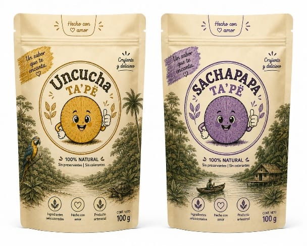
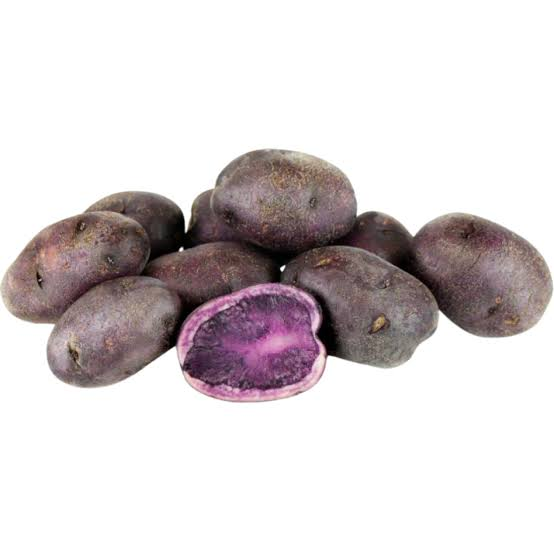
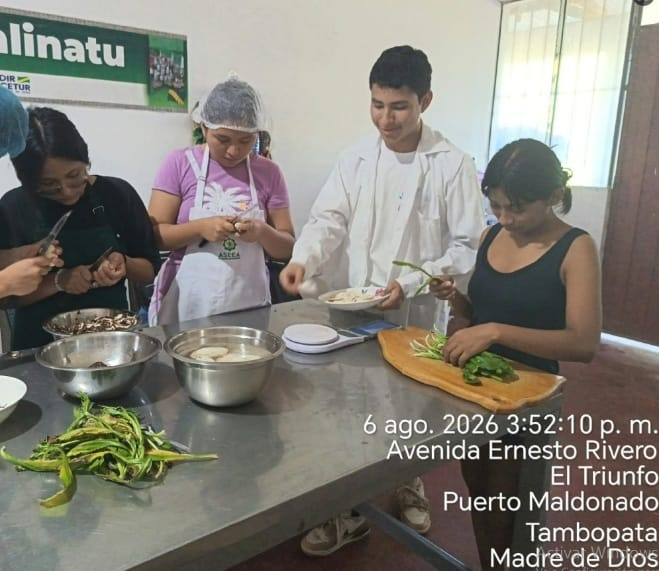
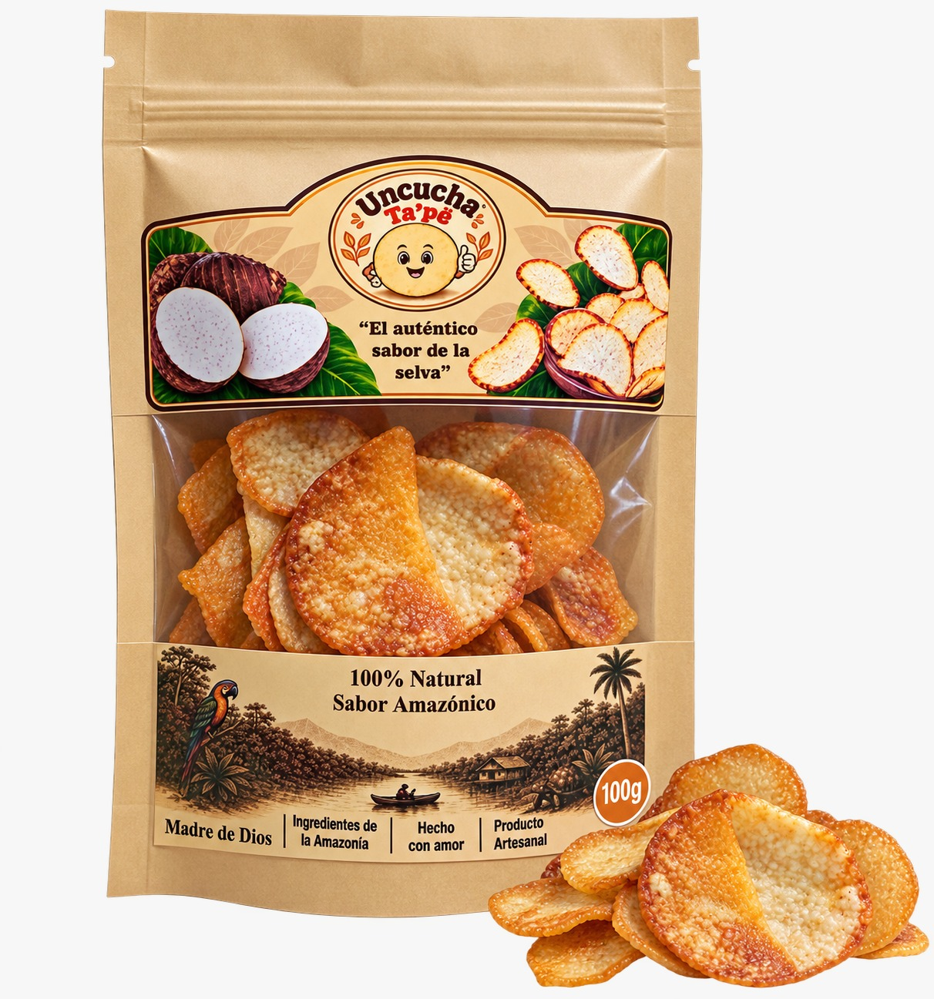
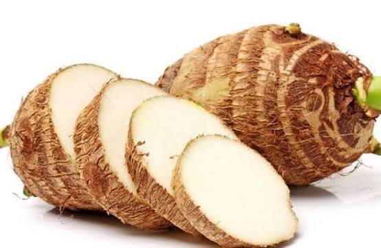

¿Qué es la uncucha?
Un tubérculo amazónico utilizado como materia prima para nuestro producto.
Disfruta de un snack crujiente, ligero y delicioso, elaborado a base de uncucha, un tubérculo tradicional de la Amazonía.

Un snack elaborado a partir de uncucha, transformada en finas láminas crujientes.
Un tubérculo amazónico utilizado como materia prima para nuestro producto.
“Ta’pë” significa “crujiente” en Harakbut.
Revalorizamos productos de nuestra Amazonía mediante una propuesta innovadora.
Conoce las etapas principales de elaboración de nuestro producto.
Seleccionamos la uncucha fresca para iniciar el proceso.
Lavamos, pelamos y cortamos cuidadosamente la materia prima.
Freímos las láminas hasta conseguir la textura crujiente característica.
Añadimos el sazonado para darle nuestro sabor característico.
Finalmente, presentamos el producto en un empaque con identidad amazónica.
Utilizamos una materia prima propia de nuestra región.
Transformamos un tubérculo amazónico en una alternativa de snack.
Nuestro producto busca ofrecer una experiencia ligera y crujiente.
Nuestra propuesta busca revalorizar los productos amazónicos.
El camino que seguimos para desarrollar nuestra propuesta.
Cada etapa de Uncucha Ta’pë representa nuestro compromiso con la innovación y los productos de nuestra Amazonía.

El primer paso para convertir nuestra idea en un snack amazónico.

Una alternativa para ampliar nuestra propuesta de snacks amazónicos.

Transformamos la materia prima mediante un proceso cuidadoso para conseguir una textura crujiente.

Un empaque pensado para conservar el producto y transmitir nuestra identidad amazónica.

Nuestra materia prima amazónica, transformada en una nueva propuesta de snack.
Estudiantes, jóvenes, trabajadores, comerciantes y consumidores de Madre de Dios.
Un snack crujiente que revaloriza una materia prima amazónica.
Ferias, mercados, eventos locales, ventas directas y redes sociales.
Seguimiento, mensajes de bienvenida, contenido personalizado y agradecimientos.
Uncucha, herramientas de preparación, empaques y medios digitales.
Producción, empaquetado, promoción y comercialización.
Uncucha Ta’pë busca demostrar que los productos de nuestra Amazonía pueden convertirse en propuestas innovadoras, atractivas y cercanas a nuestra gente.
Síguenos y conoce más sobre nuestro producto.